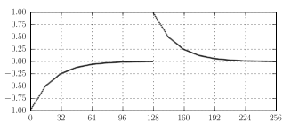
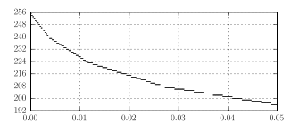

Quantization
By Sébastien Boisgérault, Mines ParisTech
February 22, 2017
Contents
Quantization is a process that maps a continous or discrete set of values into approximations that belong to a smaller set. Quantization is a lossy: some information about the original data is lost in the process. The key to a successful quantization is therefore the selection of an error criterion – such as entropy and signal-to-noise ratio – and the development of optimal quantizers for this criterion.
Principles of Scalar Quantization
Quantizers
A scalar quantizer \([ \, \cdot \, ]\) is an idempotent mapping from \(\mathbb{R}\) to a countable subset of \(\mathbb{R}\):
\[ | \{[x]\, , \, x \in \mathbb{R}\} | \leq |\mathbb{N}| \; \mbox{ and } \; \forall \, x \in \mathbb{R}, \; [[x]] = [x] \]
This definition should be taken with a grain of salt as variants of the real line are often used, including the extended real line \(\mathbb{R} \cup \{-\infty, +\infty\}\), the real line with signed zeros \(\mathbb{R}\cup\{0^-, 0^+\}\), the real line plus the undefined symbol \(\bot\), or a combination thereof.
The countability assumption is what makes the quantizer useful as an attempt to approximate a continous value by a discrete set that can be encoded as an integer. A quantizer is meant to be split into a forward and inverse quantizer: the forward quantizer builds from \(x\) an integer code that refers to \([x]\) without ambiguity and the inverse quantizer builds the approximation \([x]\) back from the code.
Formally, a forward quantizer for \([\cdot]\) is a mapping \(i[\, \cdot \,]: \mathbb{R} \to \mathbb{Z}\) such that \([x] = [y]\) implies \(i[x]=i[y]\). Because of this property, \(i[\, \cdot \,]\) may be factored into \(i[\, \cdot \,] = i \circ [\, \cdot \,]\) where \[ i : \mathrm{rng} \, [\, \cdot\, ] \to \mathbb{Z}. \] The notation for the forward quantizer is therefore consistent with the use as \(f[x]\) as a shortcut for \(f([x])\). The associated inverse quantizer, denoted \(i^{-1}\), is a left inverse of \(i\): a mapping whose domain is a subset of \(\mathbb{Z}\) that contains \(\mathrm{rng} i\) and such that \[ \forall \, x \in \mathbb{R}, \; (i^{-1} \circ i) [x] = [x] \] The first step of this quantizer composition partitions the real line into the family of sets \((I_n)_n\) with \[ I_n = \{x\in\mathbb{R}, \; i[x] = n\}, \; n \in \mathrm{rng} i \] The second step associates to any set into this partition a unique representative element. In every practical case we will encounter, the sets \(I_n\) are – possibly unbounded – intervals, either open, half-open or closed. In this context, we associate to \(x\) the decision values \([x]^-\) and \([x]^+\) to be \[ [x]^- = \inf \, \{y \in \mathbb{R}, \; [x] = [y]\} \; \mbox{ and } \; [x]^+ = \sup \, \{y \in \mathbb{R}, \; [x] = [y]\} \] and the step of the quantization at point \(x\) is \[ \Delta(x) = [x]^+ - [x]^- \]
Example – Integer Rounding
The floor function \(\lfloor \, \cdot \, \rfloor\) is a scalar quantizer that maps a real number to the largest previous integer: \[ \forall \, x \in \mathbb{R}, \; \lfloor x \rfloor \in \mathbb{Z} \; \mbox{ and } \; \lfloor x \rfloor \leq x < \lfloor x \rfloor + 1 \] A natural forward quantizer for \(\lfloor \, \cdot \, \rfloor\) is … itself ! The identity \(n \mapsto n\) is the corresponding inverse mapping. This quantizer partitions the real-line into the half-open intervals \(I_n = [n, n+1)\) for any \(i \in \mathbb{Z}\).The floor function of NumPy is an finite-precision implementation of this function. Its argument and return value are (arrays of) 64-bits floating-point numbers.
To obtain a (forward) quantizer with a finite range indexable on \(32\) bits, we may modify the initial quantizer specification so that the data outside of the range \([-2^{31}, 2^{31} - 1]\) – the range of 32-bit signed integers – is clipped: \[
\lfloor x \rfloor_{32} =
\left|
\begin{array}{rl}
-2^{31} & \mbox{if } \, x \leq -2^{31} \\
2^{31} - 1 & \mbox{if } \, x \geq 2^{31} - 1 \\
\lfloor x \rfloor & \mbox{otherwise.}
\end{array}
\right.
\] Given those modifications, a suitable finite implementation of the forward and inverse quantizers is the following code/decode pair:
from numpy import *
def encode(x):
n = floor(x)
n = clip(n, -2**31, 2**31 - 1)
return int32(n)
def decode(n):
return float64(n)
def quantize(x):
return decode(encode(x))The step function \(\Delta\) of this quantization is defined by: \[ \Delta (x) = \left| \begin{array}{rl} +\infty & \mbox{if } \; x < -2^{31} + 1 \\ 1 & \mbox{if } \; -2^{31} + 1 \leq x < 2^{31}-1 \\ +\infty & \mbox{if } \; 2^{31} - 1 \leq x \end{array} \right. \]
Other rounding functions may serve as the basis for similar schemes: the ceiling function \(\lceil \cdot \rceil\) (NumPy function ceil) defined by: \[
\forall \, x \in \mathbb{R}, \; \lceil x \rceil \in \mathbb{Z}
\; \mbox{ and } \;
\lceil x \rceil - 1 < x \leq \lceil x \rceil
\] Instead of selecting the lower or upper integer approximation of \(x\) we may also select the nearest: \[
\forall \, x \in \mathbb{R}, \; | x - [x] | = \min \, \{|x - n|, \, n \in \mathbb{Z}\}
\] The value \([x]\) is not defined by this relation when \(x = n + 1/2\), \(n\) being an integer. The NumPy function round\_ rounds for example such real number to the nearest even integer.
This example suggests a general interface for quantizers. Such objects would provide an encode method for the forward quantization, a decode method for the inverse quantization and would be callable so that quantizer(x) would apply both steps to the data x. Such objects could inherit the following Quantizer base class:
class Quantizer(object):
"Quantizers Base Class."
def encode(self, data):
raise NotImplementedError("undefined forward quantizer")
def decode(self, data):
raise NotImplementedError("undefined inverse quantizer")
def __call__(self, data):
return self.decode(self.encode(data))We can then rewrite the above integer approximation quantizer as:
class RoundingQuantizer(Quantizer):
def __init__(self, rounding=floor, integer_type=int32):
self.rounding = rounding
self.integer_type
def encode(self, x):
x = array(x)
n = self.rounding(x)
n = clip(n, -2**31, 2**31 - 1)
return n.astype(self.integer_type)
def decode(self, n):
n = array(n)
return n.astype(float64)
rounding_quantizer = RoundingQuantizer()Note that this version of the quantizer is also vectorized: several values grouped in a NumPy array may be used as arguments to encode and decode. This is an implicit requirement that we expect all quantizer classes to follow for convenience.
Uniform Quantization
A quantizer is uniform in an interval with lower bound \(a\) and higher bound \(b\) if its step function is constant in the interval. The size of the step is then directly connected to the width of the interval and the number \(N\) of distinct values of \([x]\) by \[ \Delta(x) = \frac{b-a}{N} \]
The final option that characterizes the quantizer is the choice of the base rounding function. A reference implementation is then given by:
class Uniform(Quantizer):
def __init__(self, low=0.0, high=1.0, N=2**8, rounding=round_):
self.low = float(low)
self.high = float(high)
self.N = N
self.delta = (high - low) / self.N
self.rounding = rounding
def encode(self, data):
low, high, delta = self.low, self.high, self.delta
data = clip(data, low + delta/2.0, high - delta/2)
flints = self.rounding((data - low) / delta - 0.5)
return array(flints, dtype=long)
def decode(self, i):
return self.low + (i + 0.5) * self.deltaNote that if the default value of N is selected – or more generally any even value – \([0] \neq 0\): the approximation error for \(0\) is not zero. When this property may be an issues, odd values of N may be selected – for example \(2^8 - 1\) so that \(0\) is correctly approximated ; such a quantizer is called a midtread quantizer – opposed to the original midrise quantizer.
Quantization of Random Variables
Consider a random variable \(X\) with values \(x \in \mathbb{R}\) and a density of probability \(p(x)\). For any \([x]\), we may consider the event \([X] = [x]\) with probability \[ P([X]=[x]) = \int_{\{y \in \mathbb{R}, \; [y] = [x]\}} p(y) \, dy = \int_{[x]^-}^{[x]^+} p(y) \, dy \] If the density \(p\) is constant on every interval associated to the quantization, this equation may be simplified into: \[ P([X]=[x]) = p(x) \times \Delta(x) \] More generally, if the quantizer values \([x]\) are dense enough – we say that the high resolution assumption is satisfied – then this relation holds approximately.The entropy attached to this collection of events is maximal when every event is equally likely, that is, under this approximation, when the step \(\Delta(x)\) is proportional to the inverse of \(p(x)\) \[ \Delta(x) \propto \frac{1}{p(x)} \]
Implementation of Non-Uniform Quantizers
Non-uniform quantizers may be – at least conceptually – simply generated from uniform quantizers and non-linear transformations. If \([\, \cdot \,]\) denotes a uniform quantizer and \(f\) is an increasing mapping, the function \([\, \cdot \,]_f\) defined by the equation \[ [x]_f = (f^{-1} \circ [ \, \cdot \, ] \circ f) (x) \] and displayed in figure is a nonlinear quantizer. The function \(f\) is called the characteristic function of the quantizer. Depending on the selected range for the uniform quantizer, it is determined up to an affine transformation.Note that if \(f\) is linear or affine, that is \(f(x) = ax+b\), the quantizer \([\, \cdot \,]_f\) is still uniform – that’s a reason why uniform quantizers are sometimes called linear quantizers.
Let \(\Delta\) be the step of the uniform quantizer et let’s determine what quantization step \(\Delta_f(x)\) is attached to this scheme.
For every value of \(x\), the decision values attached to \(y = f(x)\) by the uniform quantizer are \([y]^-\) and \([y]^+\). Hence, the decision values for \(x\) and the non-linear quantization are \[ [x]^-_f = f^{-1}([y]^-) \, \mbox{ and } \, [x]^+_f = f^{-1}([y]^+) \] and if the high resolution assumption is satisfied the step \(\Delta_f(x)\) is : \[ \Delta_f(x) = f^{-1}([y]^- + \Delta) - f^{-1}([y]^-) \simeq (f^{-1})'(f(x)) \Delta = \frac{\Delta}{f'(x)} \] something that is remembered as \[ \Delta_f(x) \propto \frac{1}{f'(x)} \] The proportionaly constant may be easily recovered by noting that when \(f(x)=x\), \([\, \cdot \, ]_f = [\, \cdot \,]\) and therefore \(\Delta(x) = \Delta\). If we impose moreover \(f(0) = 0\), we find \[ \label{BOOGA} f(x) \propto \int_0^x \frac{ds}{\Delta(s)} \] If the quantizer is to maximize the entropy for the random variable \(X\) with density \(p(x)\) we obtain
\[\label{BOOGAD} f(x) \propto \int_0^x p(y) \, dy \]
Example
Let’s consider the digital audio signal displayed in figure .The uniform quantization on \((-1,1)\) with step \(\Delta = 10^{-1}\) is dense enough so that the associated histogram may be considered as a continuous function of the parameter \(x\). We observe in figure that this partition generates – for a large range of values of \(x\) – a counting measure \(n(x)\) of a few thousands. The ratio \(n(x)/n\) where \(n\) is the total number of samples should therefore generate a good approximation of the density of the signal, considered as a sequence of independent and identically distributed values.
The logarithm of the histogram is similar to a function of the type \(-a |x| +b\), \(a>0\) (cf fig. ). We therefore select \(p(x) \propto \exp(-a|x|)\). The optimal quantization – for the entropy criterion – and the corresponding characteristic function \(f\) such that \(f(0)=0\) are therefore given by: \[ \Delta(x) \propto e^{a|x|} \; \mbox{ and } \; f(x) \propto \mathrm{sign}\,(x) (1-e^{-a|x|}) \]
Logarithmic Quantization
We consider in this section several related quantizers whose characteristic function is – roughly speaking – the logarithm of their argument.
The \(\mu\)-law Quantizer
Consider the probability law \[ \label{PL} p(x) \propto \left| \begin{array}{cl} \displaystyle \frac{1}{1+\mu|x|/A} & \mbox{ if } \, |x|\leq A, \\ 0 & \mbox{ otherwise. } \end{array} \right. \]
The threshold \(A\) is necessary as otherwise the right-hand side of the equation would not be summable. The parameter \(a\) controls directly the relative probability of low and high amplitude values as \(p(\pm A)/p(0)= 1/(1 + \mu)\). In the limit case \(\mu=0\), we end up with a uniform probability distribution on \([-A, A]\).
The optimal quantizer for the entropy criterion satisfies () and therefore the characteristic function \(f\) such that \(f(0)=0\) satisfies \[
f(x) \propto \mathrm{sign}\,(x) \ln \left(1 + \mu \frac{x}{A}\right).
\] If we limit the range of the quantizer to \([-1,1]\) (we set \(A=1\)) and enforce the constraint \(f([-1, 1]) = [-1, 1]\), we end up with \[
f(x) = \mathrm{sign}\,(x) \frac{\log \left(1 + \mu|x| \right)}{\log(1+\mu)}
\] This quantization scheme is called \(\mu\)-law and is for example used in the NeXT/Sun AU audio file format (files with extension .au or .snd). The actual implementation of the law, specified in the ITU-T G.711 standard – differs slightly from the theoretical formulas. A reference implementation is given in the code below:
class MuLaw(Quantizer):
"""
Mu-law quantizer
"""
scale = 32768
iscale = 1.0 / scale
bias = 132
clip = 32635
etab = array([0, 132, 396, 924, 1980, 4092, 8316, 16764])
@staticmethod
def sign(data):
"""
Sign function such that sign(+0) = 1 and sign(-0) = -1
"""
data = array(data, dtype=float)
s = numpy_sign(data)
i = where(s==0)[0]
s[i] = numpy_sign(1.0 / data[i])
return s
def encode(self, data):
data = array(data)
s = MuLaw.scale * data
s = minimum(abs(s), MuLaw.clip)
[f,e] = frexp(s + MuLaw.bias)
step = floor(32*f) - 16 # 4 bits
chord = e - 8 # 3 bits
sgn = (MuLaw.sign(data) == 1) # 1 bit
mu = 16 * chord + step # 7-bit coding
mu = 127 - mu # bits inversion
mu = 128 * sgn + mu # final 8-bit coding
return array(mu, dtype=uint8)
def decode(self, i):
i = array(i)
i = 255 - i
sgn = i > 127
e = array(floor(i / 16.0) - 8 * sgn + 1, dtype=uint8)
f = i % 16
data = ldexp(f, e + 2)
e = MuLaw.etab[e-1]
data = MuLaw.iscale * (1 - 2 * sgn) * (e + data)
return data
mulaw = MuLaw()Note that this code is applied to values between \(-1\) and \(1\) and uses 8 bits. The most significant bit encodes the sign; the amplitude of the signal is coded by the 7 remaining bits. The effective value of \(\mu\) is approximately 250 but instead of using the expression \(\log(1+\mu|x|)\), we prefer a piecewise affine approximation of it (see fig ). The values \([x]\) are then all multiples of \(2^{-13}\) which limits the additional quantization error when the original signal is initially encoded with a uniform law using 14 bits or more. To ease the error correction when transmitted the bits other than the sign bit are finally inverted.
 
IEEE754 Floating-Point Numbers and \(A\)-law
All scientific computing applications use implicitely a quantizer: the quantizer that represents approximation of real numbers in the floating-point arithmetic. The description of two types of numbers – single and double (or rather, single and double-precision numbers) – is detailled in the IEEE 754 standard. In both cases, 1 bit is allocated to code the sign of the number, \(m\) bits for the exponent part and \(n\) bits for the fraction part, \[
s \in \{0,1\}, \; e \in \{0, \cdots, 2^{m}-1\}, \; f \in \{0,\cdots, 2^{n}-1\}
\] consequently any real number is represented by an integer in \(\{0, \cdots, 2^{m+n+1}\}\) according to: \[
n = s \times 2^{m+n} + e \times 2^n + f \in \{0,\cdots, 2^{m+n+1}\}
\] The single type is defined by \((m,n)=(8,23)\) and the double type by \((m,n)=(11,52)\) ; they are respectively coded on 32 and 64 bits.
We define \[ e_0 = 2^{m-1} - 1 \] so that the value of the actual exponent \(e-e_0\) range (almost symmetrically) from \(2^{m-1}\) to \(-2^{m-1}+1\). The inverse quantizer attached to the standard floating point number representation is defined as follows: for an integer \(n\), \([x] = i^{-1}(n)\) is given by \[ [x] = \left| \begin{array}{rc} NaN & \mbox{if } e = 2^{m}-1 \mbox{ and } f \neq 0 \\ (-1)^s \infty & \mbox{if } e = 2^{m}-1 \mbox{ and } f = 0 \\ (-1)^s (1 + f / 2^{n}) \times 2^{e - e_0} & \mbox{if } \; 0 < e < 2^{m}-1 \\ (-1)^s ( f / 2^{n}) \times 2^{1 - e_0} & \mbox{if } \; e = 0\; \end{array} \right. \]
The structure of theses inverse quantizers are displayed in the figure ; they are piecewise affine approximation of an exponential with a base of 2, except in the range \(e=0\) (the so-called denormalized numbers) where the graph is linear.
[graph of the inverse quantizer for a floating point representation such that \((m,n)=(4,3)\)] (images/float.pdf)
The \(A\)-law is a variant of the \(\mu\)-law that has a structure similar the single and double types of floating point arithmetic but with a base different from 2. Given a value of \(A\) (often \(87.7\)), the inverse of its characteristic function is defined on \([-1, 1]\) by \[
f^{-1}(x) = \mathrm{sgn}\, (x) \times \left|
\begin{array}{rl}
(1+\ln A) |x|/A & \mbox{if } \; |x| < \frac{1}{1+\ln A} \\
\exp(x(1+\ln A)-1)/A & \mbox{otherwise.}
\end{array}
\right.
\]
Signal-to-Noise Ratio
Computation of the signal-to-noise ratio
For a given sequence of \(k\) values \(x_n\), the output \([x_n]\) of a quantizer may be interpreted as the sum of the original value and a perturbation sequence \(b_n= [x_n] - x_n\) called a noise. The square of the signal-to-noise ratio – or SNR – is simply the ratio between the energies of those two values: \[ \mathrm{SNR}^2 = \frac{ \displaystyle\mathbb{E}sp \left( \sum_{n=0}^{k-1} x_n^2 \right) }{ \displaystyle \mathbb{E}sp \left( \sum_{n=0}^{k-1} b_n^2 \right) } \] The SNR is often measured in decibels (dB): \[ \mathrm{SNR} \; \mbox{[dB]} = 20 \log_{10} \mathrm{SNR} = 10 \log_{10} \mathrm{SNR}^2 \]
When the values \(x_n\) are independent and follow the same probability law \(p(x)\), this energy is given by \[ \mathbb{E} \left( \sum_{n=0}^{p-1} x_n^2 \right) = k \, \mathbb{E} \left( x_n^2 \right) = k \int_{-\infty}^{+\infty} x^2 p(x) \, dx \] and under a high resolution assumption we have \[\begin{eqnarray*} \mathbb{E}sp( b_n^2) &=& \int_{-\infty}^{+\infty} ([x]-x)^2 p(x)\, dx \\ &=& \sum_y \int_{y}^{y+\Delta(y)} ([x]-x)^2 p(x)\, dx \\ &\simeq& \sum_y p(y) \int_{y}^{y+\Delta(y)} (y + \Delta(y)/2 -x)^2 \, dx \\ &=& \sum_y p(y) \frac{\Delta(y)^3}{12} \\ &\simeq& \sum_y \int_{y}^{y+\Delta(y)} \frac{\Delta(x)^2}{12} p(x) \, dx \\ &=& \int_{-\infty}^{+\infty} \frac{\Delta(x)^2}{12} p(x)\, dx \\ &=& \frac{1}{12} \mathbb{E}sp \left( \Delta(x_n)^2 \right) \label{noise-square} \end{eqnarray*}\]Finally \[ \label{SNRSNR} \mathrm{SNR}^2 = 12\frac{\mathbb{E}sp(x_n^2)}{\mathbb{E}sp(\Delta(x_n)^2)} = 12 \frac { \displaystyle \int_{\mathbb{R}} x^2 p(x) \, dx } { \displaystyle \int_{\mathbb{R}} \Delta(x)^2 p(x)\, dx } \] In the typical case where the probability density of the signal is uniform on \([-A, A]\) and the quantization is uniform on this range with a step \(\Delta\), we end up with \[ {\mathrm{SNR} = 2 A/\Delta} \]